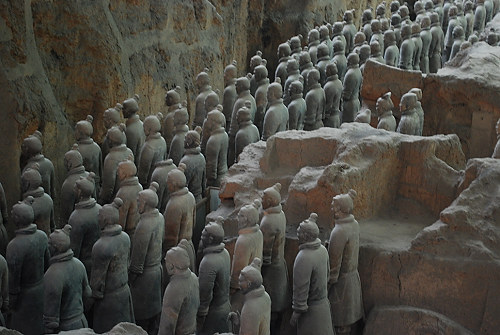

|

From Wikipedia: "Estimates from 2007 were that the three pits containing the Terracotta Army held more than 8,000 soldiers, 130 chariots with 520 horses and 150 cavalry horses, the majority of which remained buried in the pits nearby Qin Shi Huang's mausoleum.[2] Other terracotta non-military figures were found in other pits, including officials, acrobats, strongmen and musicians." |